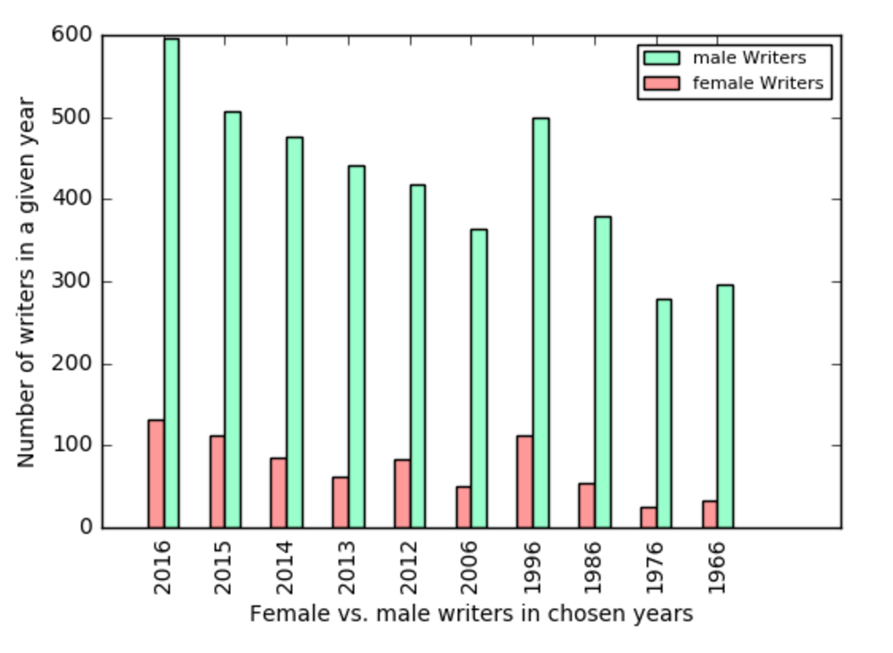
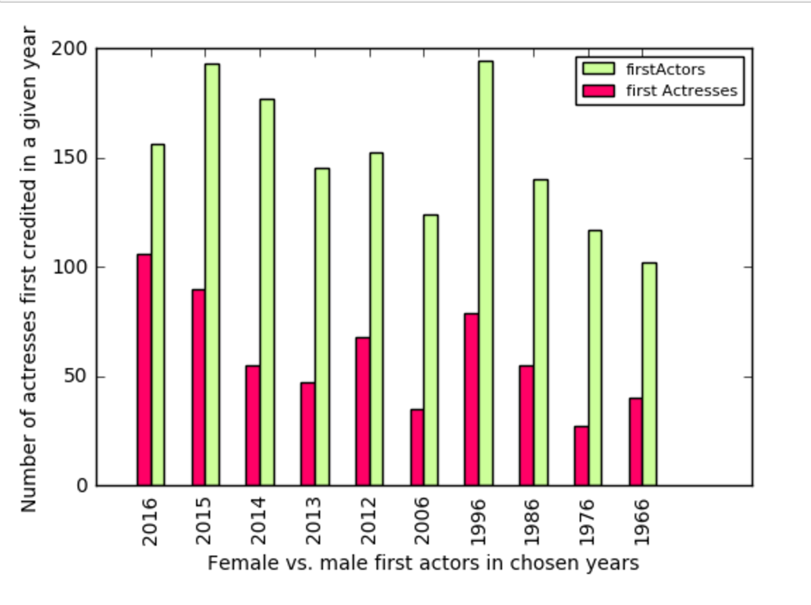
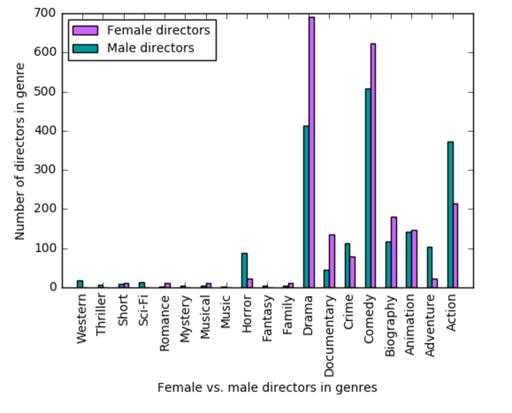
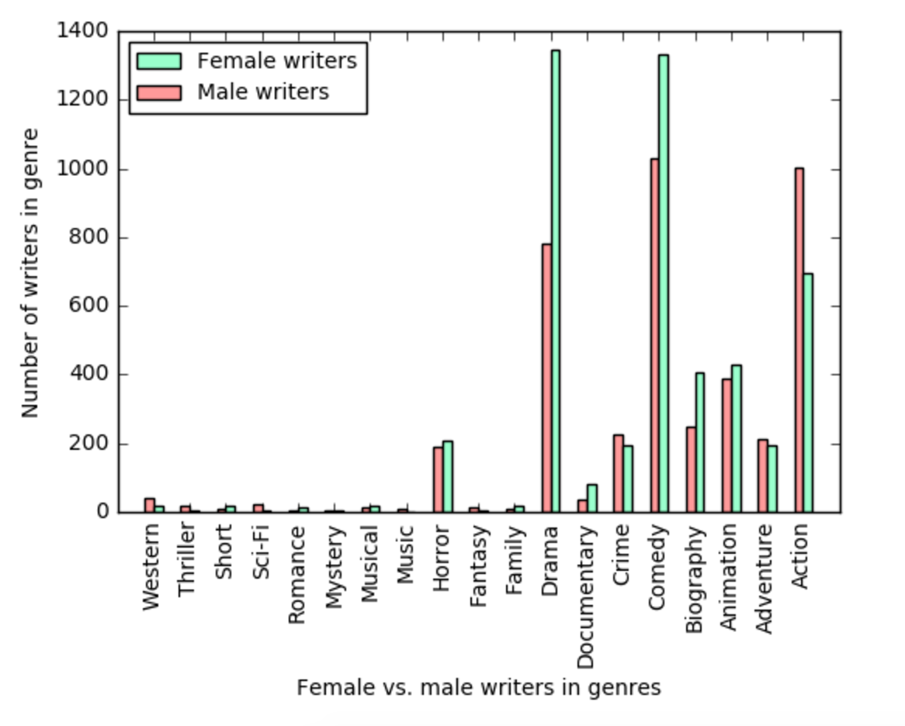
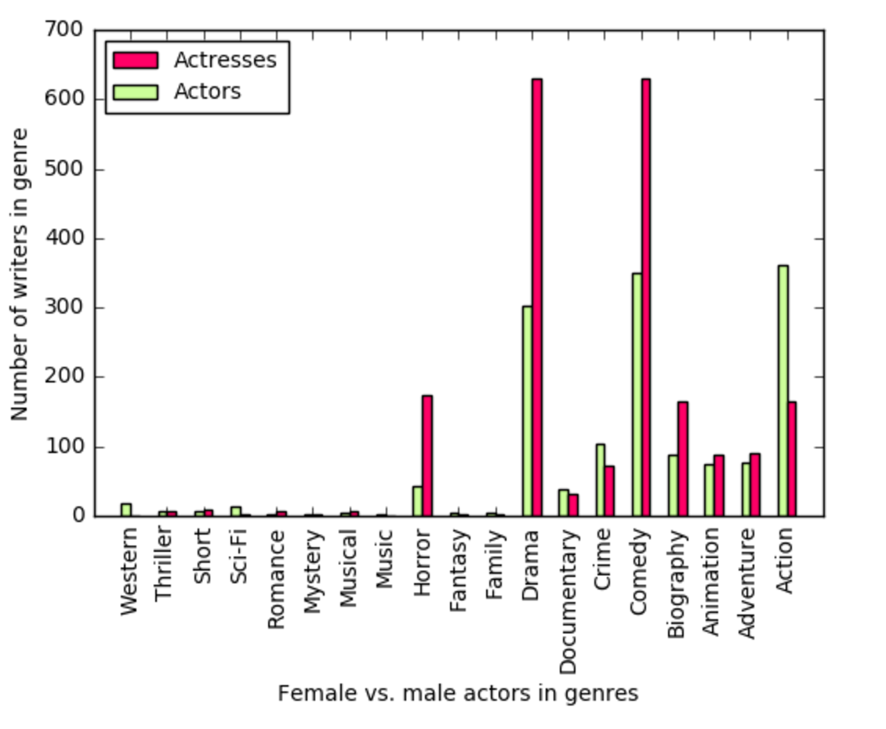
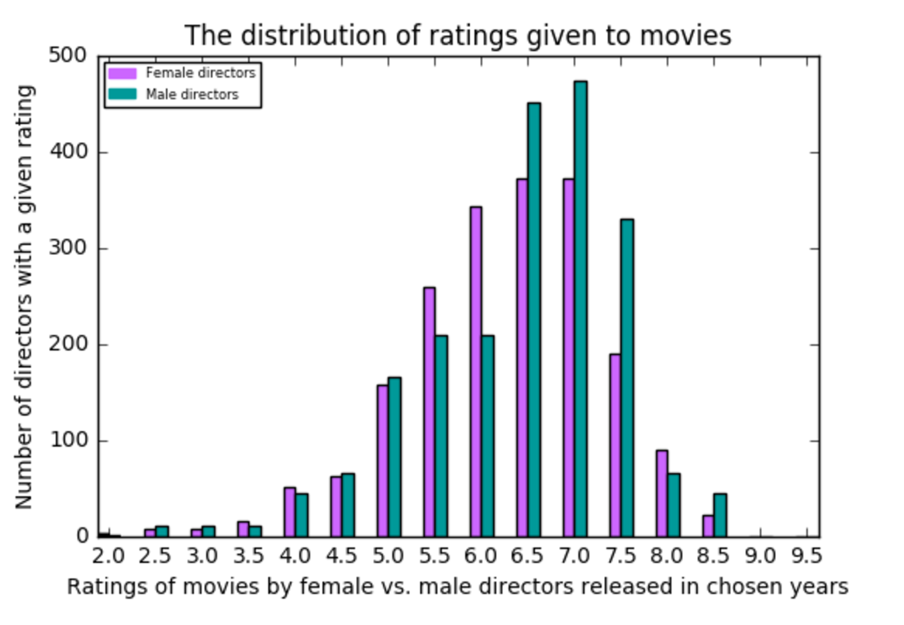
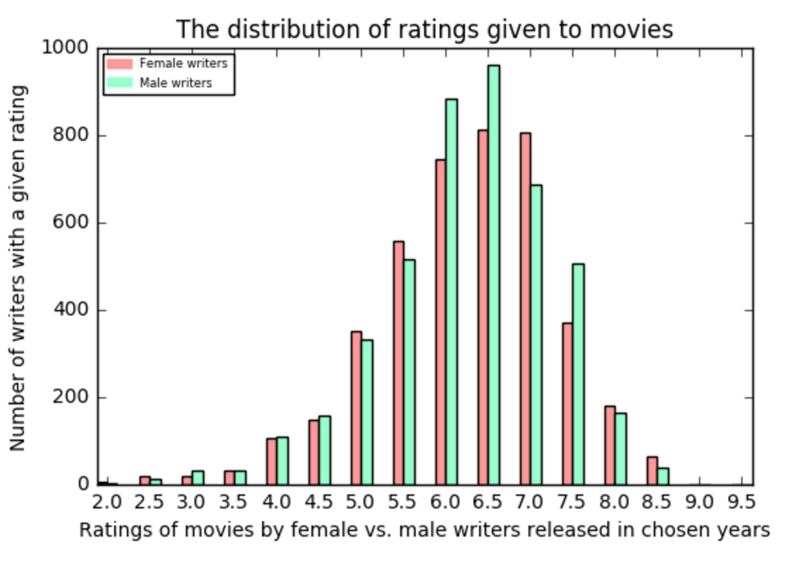
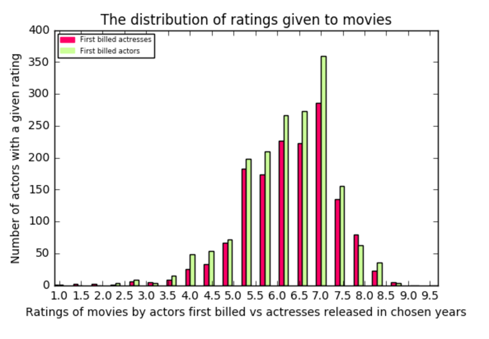

The tasks
In this section, we'll look at text analysis for the project. We do a term frequency - inverse document frequency analysis on all of the movies to create a sort of a movie recommendation system, look at the words generally used for movies based on gender, perform a sentiment analysis and more.
A rating classifier
First, we train a classifier to guess the rating of movies on IMDB based on the words used about them in their user reviews and the movie overviews. We binarize the ratings, and split the ratings on 7.5, since movies on IMDB are generally considered very good if they score higher. Thus, a movie with over 7.5 receives 1 in our binarizer, and a movie with below 7.5 receives a 0. We train the classifier on 90% of our data and get a performance of around 80%, and at the highest, 85%. Although this doesn't seem like a very bad performance, if we look at the number of movies we had in each division, we have 374 movies receiving a high grade and 1823 movies receiving a low grade. If we would guess that every single movie got a lower grade, the classifier would have around 83% performance, that is, a pessimistic classifier (always rating movies as bad) is most often better performing than ours.
A movie recommendation system
First, we perform a tf-idf analysis on our text, and use k nearest neighbour search to be able to make sort of a movie recommendation system. We pick a random movie, and pick the four that are most like it in terms of the words used in user reviews and movie overviews. This can hopefully return similar movies as recommendations.

The movie recommendation system seems to work, as it mainly predicts movies in the same class (pretty bad Adam Sandler movies) for a reasonably O.K. Adam Sandler movie. And one about golf if that's the reason for the user liking Happy Gilmore.
Gender descriptive words
Now, we split the movies on our list up to four groups. The first group consists of movies with a female star, female director, and at least one female writer. The next group consists of all-male movies. The third group has movies that have either a female star or a director and the last group contains the rest of the movies, the blended movies.
3.19% of 2102 movies have a female writer, director and a star while 56.90% of the movies have a male writer, director and a star.
In contrast to before, when we used a built-in Vectorizer to perform our tf-idf analysis, we use our own function now to see which words are most descriptive of our four groups, all-female, all-male, female director/actress and blended.

Looking at this list, the results aren't as clear-cut as maybe expected, even though the all-male list contains some words that might be considered masculine, and are definitely more action-filled. The all-female list contains many female names. This list does not show any sentiment.
Word clouds for the groups
Now let's make wordclouds from the list above: Let's consider that the preceding graph shows every movie that has a male writer, as well as every movie that has a female writer. The ratios are different than in our table, showing that there are many movies that contain both female and male writers.
Actors ratio
The ratio of the stars of movies is at least getting more positive in 2016.
The distribution of genres
Next, we'll look at which genres movies from both of the genders are likely to be. Let's consider that since women appear less often in every single aspect of the movies, we have multiplied the number of women accordingly, so the genders appear approximately as often.
Directors genres
We see that women are far more likely to direct dramas, biographies and comedies, but much less likely to take on the directing of action, adventure and horror. No women have directed any mysteries, sci-fis, thrillers, fantasies, music films and westerns in the years we look at.
Writers genres
We see the same pattern for writers. Females are more likely to write dramas and comedies, but less likely to write action movie scripts. No women had written music films.
Actors genres
We see the same pattern as before, except for now, it's much more likely that a woman stars in a horror film than a man. No woman had starred in a western.
The distribution of ratings
Finally, in this graphs section, we'll look at which ratings movies from both of the genders are likely to receive. Again, the number of women is multiplied in accordance with the appearance of men.
Directors ratings
Female directed films are more likely to receive a lower grade of 5.5-6.0 (and 8.0 by a small factor), but male directors generally receive higher grades (6.5-8.5).
Writers ratings
The ratings are better distributed for the writers.
Actors ratings
Male stars receive more of almost every grade, so the distribution must be pretty even, but the index of multiplication has been rounded in some uneven way.